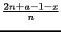
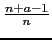

suivant: Polynôme de Tchebychev de
monter: Polynômes orthogonaux
précédent: Polynôme de Hermite :
Table des matières
Index
Polynôme de Laguerre : laguerre
laguerre a comme argument un entier n et eventuellement le
nom de la variable (x par défaut) et du paramètre (a par défaut).
laguerre renvoie le polynôme de Laguerre de degré n et de paramètre a.
Le polynôme de Laguerre de degré n de paramètre a noté L(n, a, x)
vérifie les relations :
L(0, a, x) = 1
L(1, a, x) = 1 + a - x
L(n, a, x) = L(n - 1, a, x) - L(n - 2, a, x)
Ces polynômes sont orthogonaux pour le produit scalaire :
< f, g > =  f (x)g(x)xae-xdx
f (x)g(x)xae-xdx
On tape :
laguerre(2)
On obtient :
(a^2+-2*a*x+3*a+x^2+-4*x+2)/2
On tape :
laguerre(2,y)
On obtient :
(a^2+-2*a*y+3*a+y^2+-4*y+2)/2
On tape :
laguerre(2,y,b)
On obtient :
(b^2+-2*b*y+3*b+y^2+-4*y+2)/2
Documentation de giac écrite par Renée De Graeve